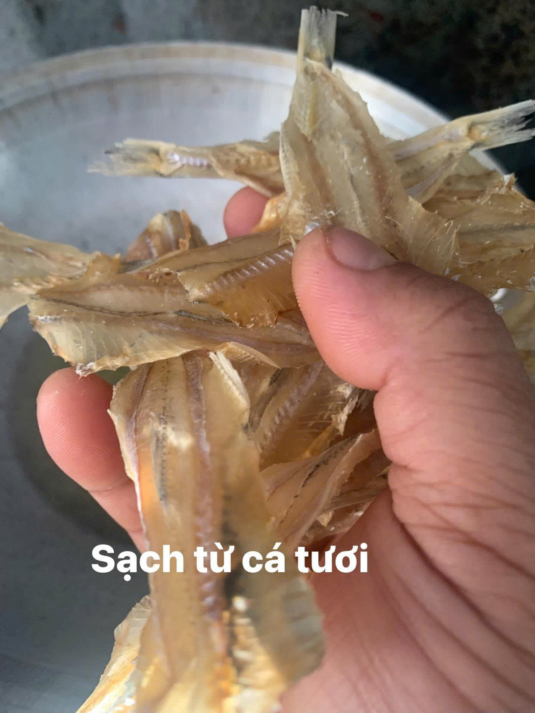
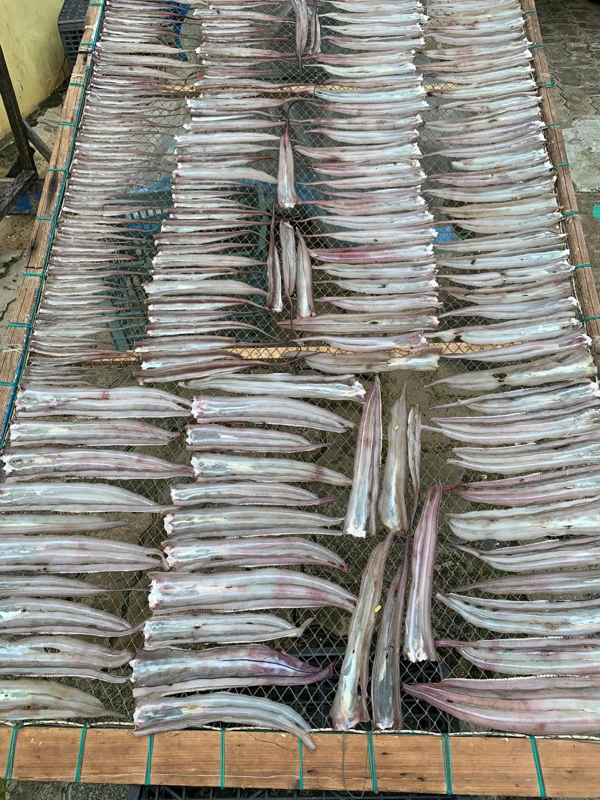
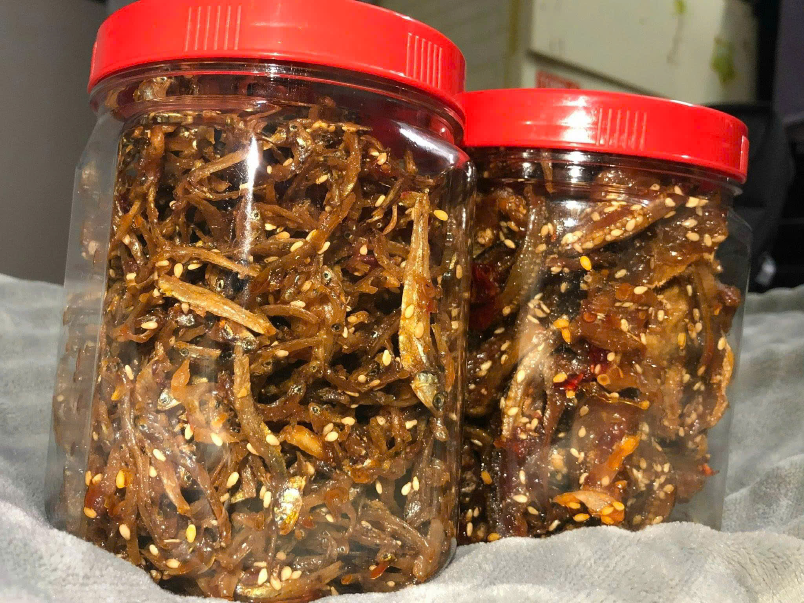
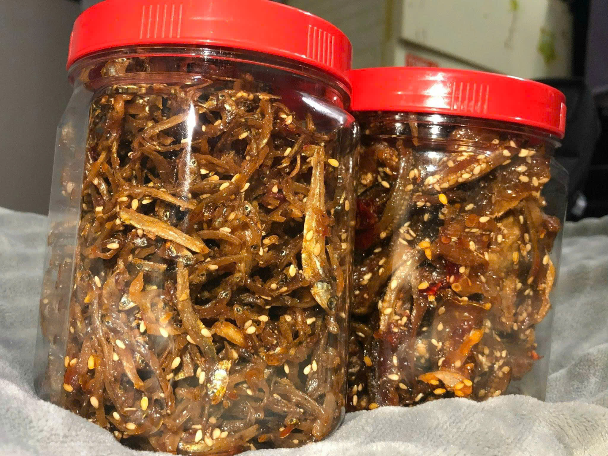
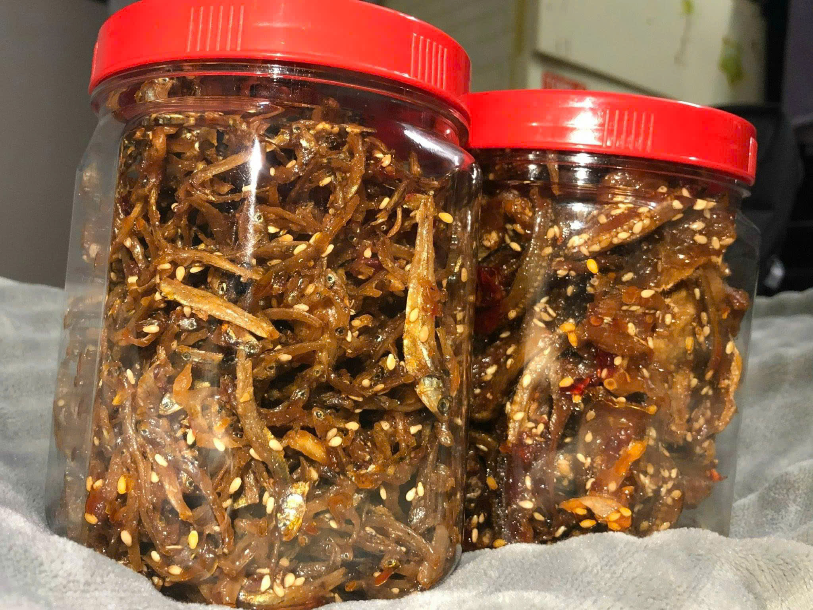
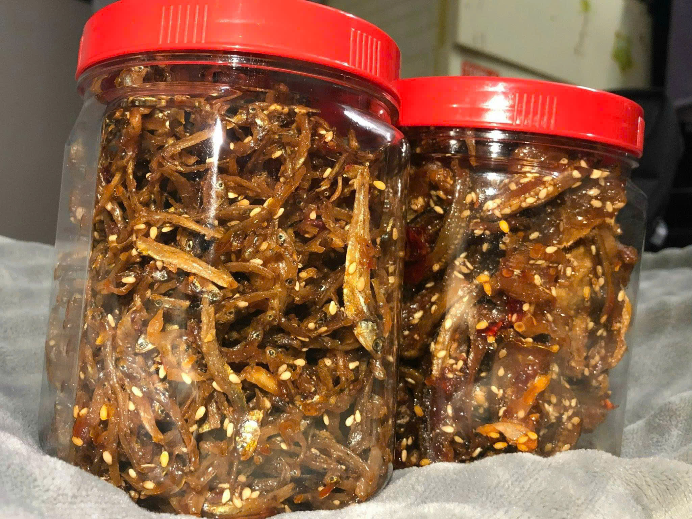

Hình ảnh sản phẩm


 


Cá rim từ Quảng Ngãi mang trong mình tinh hoa của biển cả miền Trung, hòa quyện cùng các gia vị truyền thống để tạo nên một món ngon khó cưỡng. Mỗi miếng cá là sự kết tinh từ sự cần mẫn của ngư dân và tay nghề khéo léo của những nghệ nhân chế biến. Chúng tôi cam kết mang đến cho thực khách một trải nghiệm vị giác đặc biệt, vừa đậm đà, vừa lưu giữ trọn vẹn vị ngọt tự nhiên. Quy trình sản xuất nghiêm ngặt và chất lượng cao là lời hứa của chúng tôi dành cho bạn, để mỗi sản phẩm đều là một niềm tự hào từ Quảng Ngãi.
